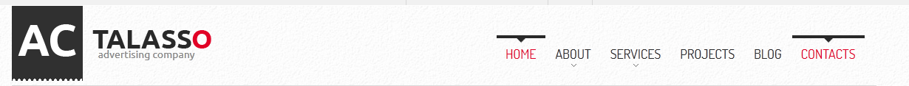
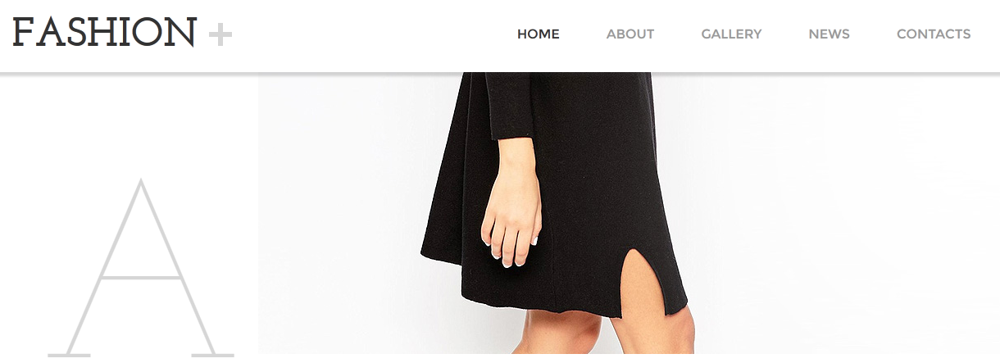
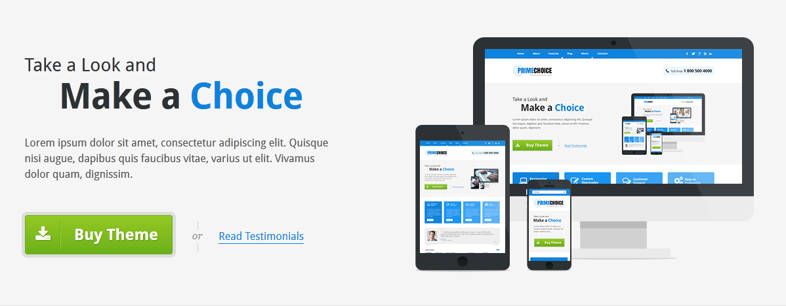
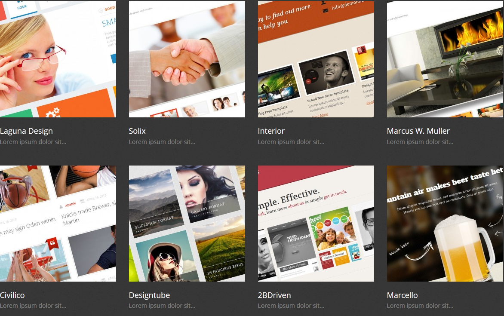
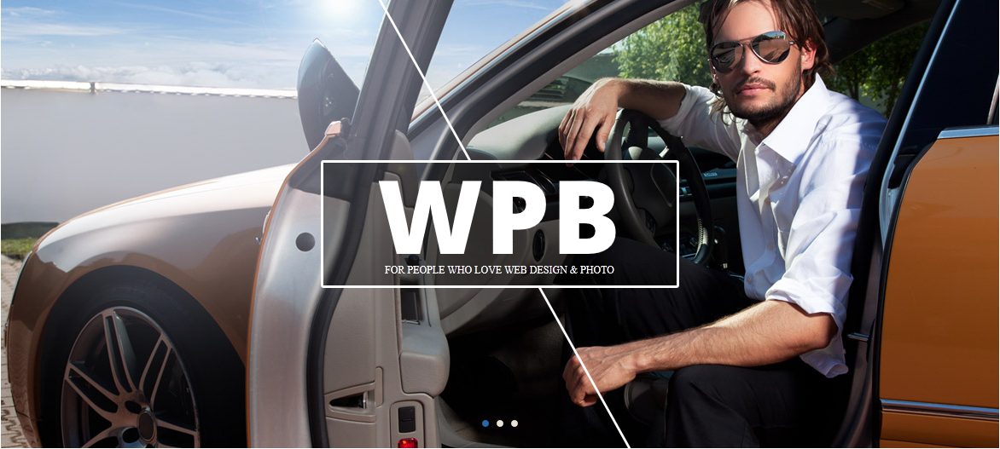

Component Library

Drop-down menu Header
What I hope to practice/learn?
A crowded website header navigation can be a nightmare and a drop-down menu feature absolutely soften the confusion for the user, practicing this feature is always a plus especially the ability to make it responsive for mobile device user.
How this relates to what I have/will learn in WDD.
The drop-down menu is a great feature to have that give the user speedy access to content, I would like to enhance my knowledge of this feature where my menus are dynamically created and change without modifying my HTML or CSS.

Sticky Menu
What I hope to practice/learn?
A sticky menu is a must have asset since it provide the user with quick navigation without have to scroll back to the top. I want practice this feature with a dynamic approach.
How this relates to what I have/will learn in WDD.
Usability studies has shown that this feature allow user to navigate 22% faster on a website, i have done some stick menu with CSS in the past but still know there is room for improvement especially using JavaScript to make the feature dynamic.

Effective CTA
What I hope to practice/learn?
A call to action or CTA on a website is meant to prompt user to click to generate some form of lead generation and customer almost all website need this feature and practicing and learning to do this effectively for me is critical and cannot be overlook at no time.
How this relates to what I have/will learn in WDD.
CTAs are critical for achieving any results online, because traffic, subscribers, and followers don’t do you any good until they become leads and eventually customers, I have done and learn CTA in pass classes but improving and perfecting the presentation of a effective CTA is paramount today working for any client.

Portfolio Gallery
What I hope to practice/learn?
As designers we are constantly ask to build impressive portfolio for clients and myself this a must thing to get right, my aim is to improve on the method I already learnt and know for versatility.
How this relates to what I have/will learn in WDD.
Portfolios stand as a virtual calling card, connecting your work with people across the world wide web at the click of a 'Stumble' or search, I have explore a few technique in previous class however I still believe there is a lot more to add and learn as relates to presenting a perfect portfolio.

Home page image slider
What I hope to practice/learn?
Home Image slider has evolve into a effective center stage presenter of valuable information to the user on a website home page, an effective slider captivates the user, i want to improve my skill set on what I already know.
How this relates to what I have/will learn in WDD.
Image slider is common place on many website , it allows the designer to enthrall the user, I wan to improve on this feature with a more dynamic approach to content and explore different ways of implementing a image slider.